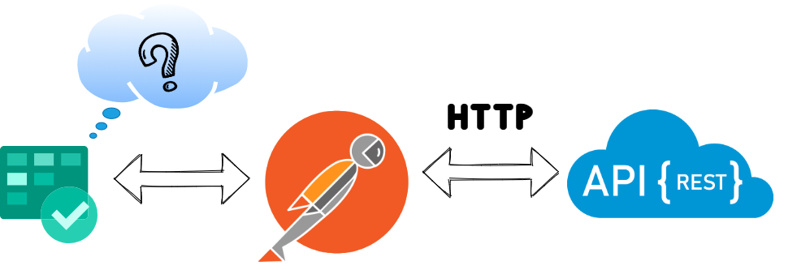

Anshuman Anand Singh
May 27, 2021
Anshuman Anand Singh
May 27, 2021
Suppose in your project there’s a critical sprint going on and someone by mistake deletes the work item from ADO Boards and spends 10 hours to find a way to restore it back to its glory.
Well you don’t have to waste your time because to restore deleted work items from azure boards you can use Azure REST API’s, I know it is in the jungle of Microsoft Documentation, a different world altogether. Therefore you’ll find everything in this tutorial to restore your deleted work items.
Azure REST APIs can be lifesaver, some say its better than Microsoft application portals.

Prerequisites
- Access to ADO with permissions to project to confirm restoration.
- PAT Token from ADO.
- API Testing tool such as Postman or you can always use CURL.
Steps to Create PAT Token.
- Sign in to your organization in Azure DevOps (https://dev.azure.com/{yourorganization}).
- From your home page, open your user settings, and then select Personal access tokens.
- And then select + New Token.
- Name your token, select the organization where you want to use the token, and then choose a lifespan for your token.
- Select the scopes for this token to authorize for your specific tasks.
- When you’re done, make sure to copy the token. For your security, it won’t be shown again. Now you will use this token as your password.
You can select Full Access but in this specific case you can select Work Items with Read, Write and Manage and then select Create. As shown below in picture.
Making Requests in Postman to restore Work Items:
- In postman’s authentication tab select Basic Auth and provide your ADO username and in place of password paste your PAT token.
- Now we query to ADO using Microsoft’s RecycleBin APIs. Using the API mentioned below we can get the deleted Work Item.
- You should see the JSON representation of deleted Work Item when you hit send in postman with Basic Auth setup and deleted Work Item passed in URL. Please don’t forget to enter project name in URL.
- Now in the same tab or new, you need to change GET request to PATCH and pass Boolean flag in request’s body. In Postman, you have to send request body in form of JSON to MS APIs as that is only valid content type. Therefore, in the current scenario we just send boolean key isDeleted with value as false
- This request should restore your deleted workItem, please search the in your ADO to confirm. After successful restoration of the WorkItems, please revoke the PAT token.
GET https://dev.azure.com/{organization}/{project}/_apis/wit/recyclebin/{id}?api-version=4.1
{
"isDeleted":false
}